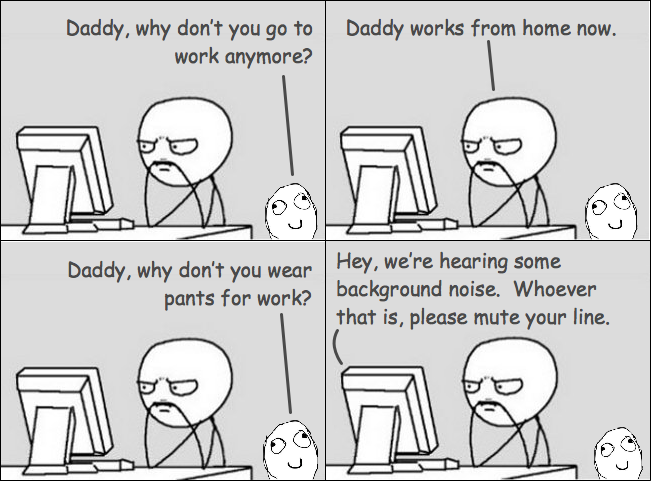

Work From Home Tips For Non-remote Workers
Remote-first and remote-friendly companies have a different work culture & communication process compared to non-remote companies. Due to COVID-191 world wide pandemic, majority of workers who didn't had prior remote experience are WFH(working from home). This article is intended to provide some helpful tips for such people.
Work Desk
It is important to have a dedicated room or at least a desk for work. This creates a virtual boundary between your office work and personal work. Otherwise, you will end up working from bed, dining tables, kitchen etc which will result in body pains due to bad postures.
Get Ready
Image Credit: raywenderlich 2

Start your daily routine as if you are going to office. It is easy to stop caring about personal grooming and attire when WFH. Your attire can influence your focus and productivity.
If you find getting ready is hard, schedule video calls for all meetings with your colleagues. This might give some additional motivation for you to get ready early in the morning. When the work time, go to your work desk and start working.
Self Discipline
Schedule your work time. Whenever possible try to stick to office working hours. Without proper schedule, you will either end up under working or over working as your personal work and office work gets mixed up.
Take regular breaks during work hours. Without any distractions, it is easy to get lost in the pixels for longer durations. Taking short breaks for a quick walk and getting a fresh air outside will freshen up.
With unlimited access to kitchen and snacks, it is hard to avoid binge eating at home. But atleast avoid binge eating during office hours.
Exercise. Since WFH involves only sitting in a chair through out the day, staying physically active is challenging especially during this pandemic. Exercise few minutes every morning, help yourself in the kitchen by making a meal or doing dishes, clean your house etc., should help in staying physically active.
Seek Help
WFH can be lonely at times as the social interactions are quite less. Schedule 1 to 1 meetings or virtual coffe meetings with your colleagues to increase social interactions. Discuss WFH problems with your colleagues, friends and remote communities to see how they are tacking those problems.

Written by
Chillar Anand
Musings about programming, careers & life.